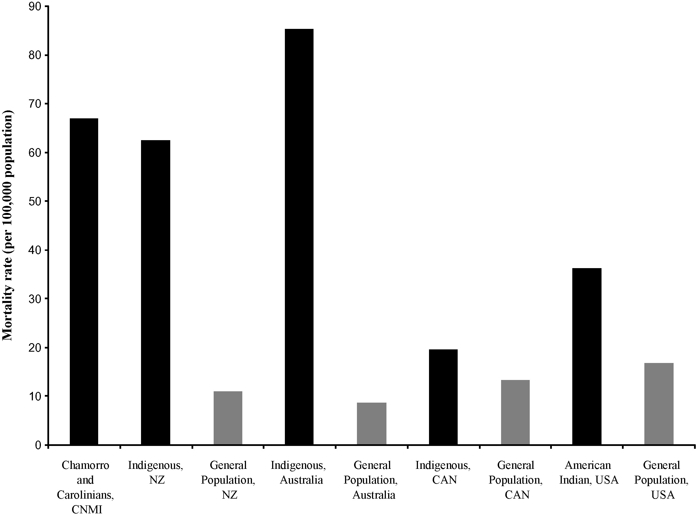
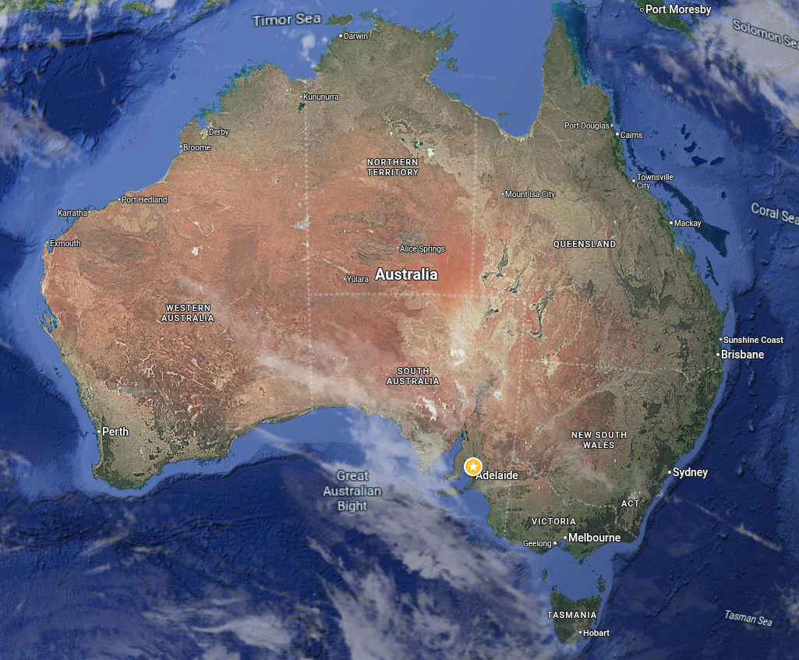
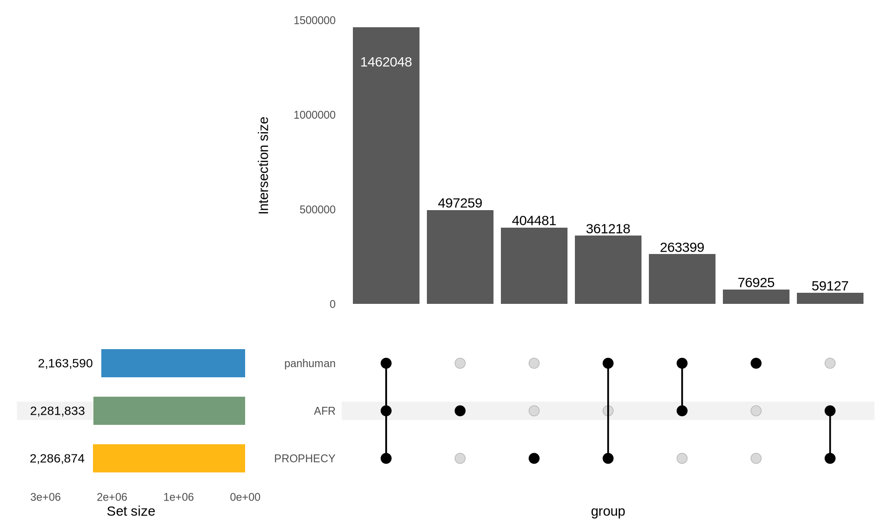
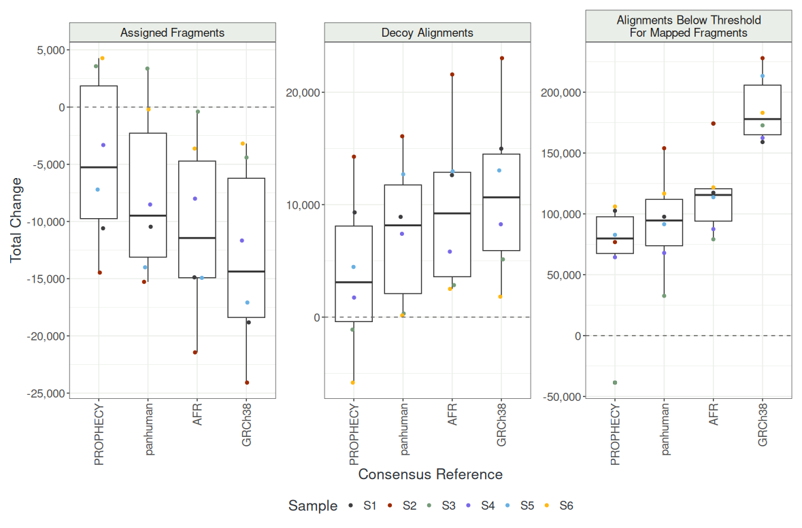
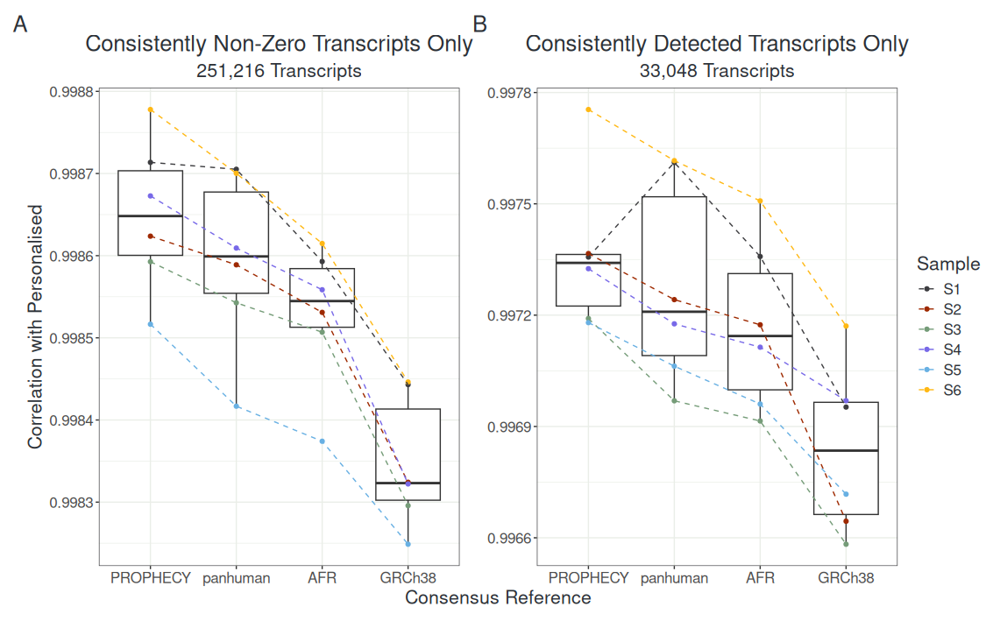
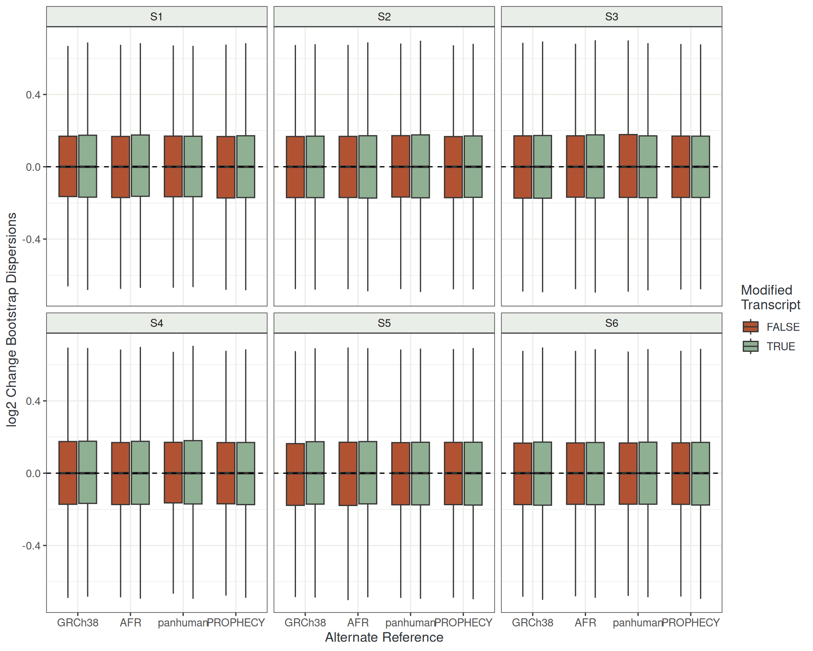
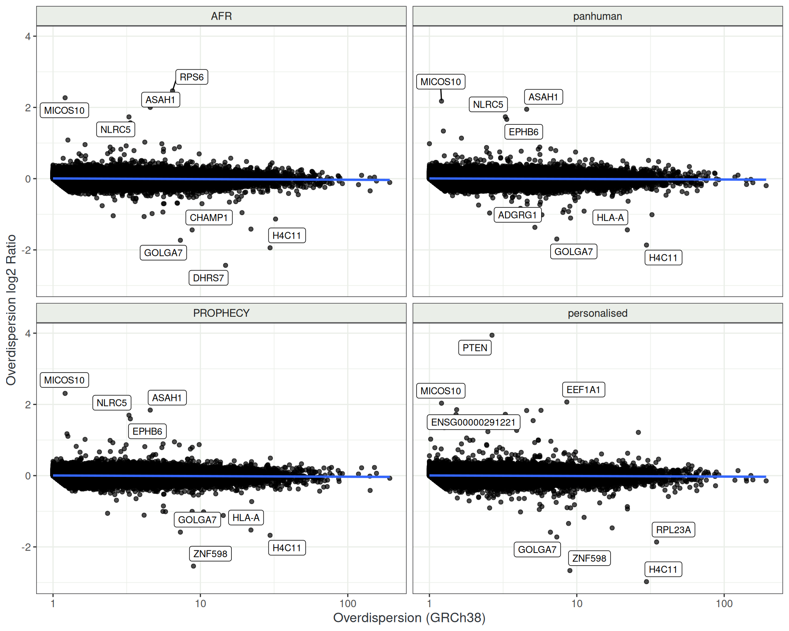
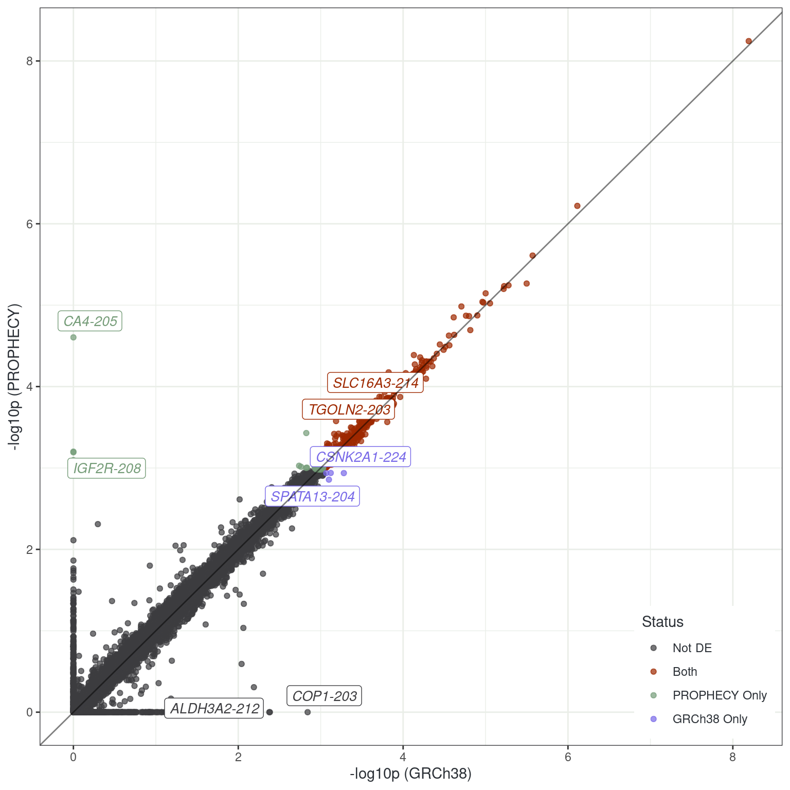
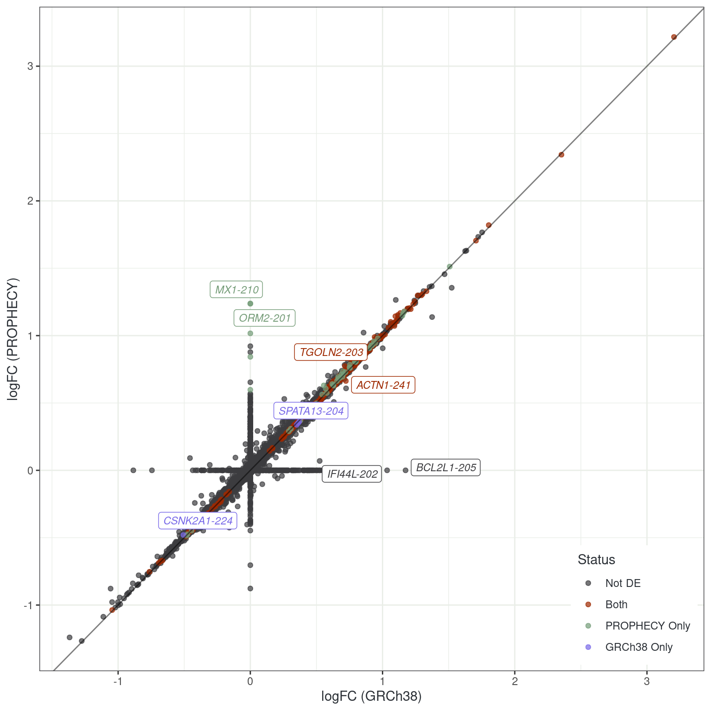
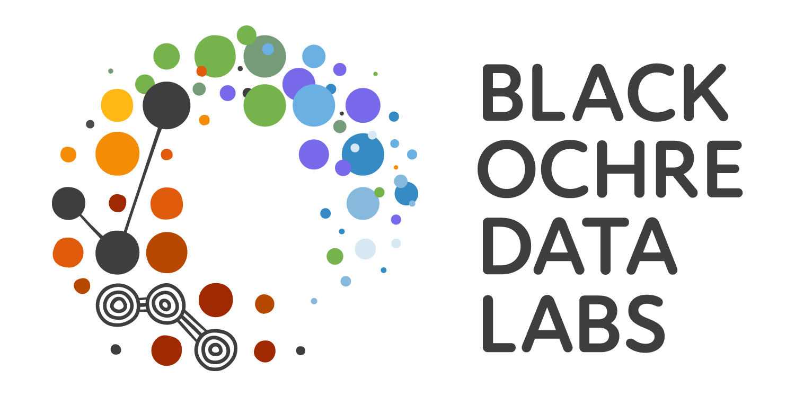

transmogR
Using genomic variants to modify a reference transcriptome for analysis of an Australian Indigenous population
Black Ochre Data Labs
The Kids Research Institute Australia / ANU
May 20, 2026
The PROPHECY Motivation

- Type 2 Diabetes in Indigenous Australians
- Mortality rate is ~10x higher
- Age of onset is much earlier
- Complication rates \(\uparrow\uparrow\uparrow\)
- Cardiovascular Disease
- Chronic Kidney Disease
- Diabetic Retinopathy
The PROPHECY Multiomics Project

- Indigenous led project
- Run from Adelaide (+ Perth)
- Historical lands of Kaurna people
- 1391 participants from SA Aboriginal communities
- DNA, DNAme, RNA, Proteomics, Lipidomics, Metabolomics, Inflammatory Panel, ECG, Retinal scans, clinical & psychosocial measures etc
Variation Within The Indigenous Australian Population
- 25% of genomic variation unique to Australian Aboriginal population (Easteal et al. 2020)
- If variants are driving progression \(\implies\) will we see it in the RNA-seq?
STARconsensushas shown improved mapping and quantification (Kaminow et al. 2022)
- Can we bring the reference transcriptome closer to our participants?
- What impact will this have at both the gene-level and the transcript-level?
The Package transmogR
- Can take a set of variants (SNP + INDEL)
- Also checks for overlapping variants
- Modify genome sequence \(\implies\) co-ordinates change
- Track coordinate shifts after modification
- Optional tags added to sequence IDs
- Modify transcriptome sequences
digestSalmon(): parse counts, TPM, effLen & overdispersions- Can handle divergent references: Complete vs chrY-excluded
- Personalised transcriptomes \(\implies\) statistical assumptions?

Benchmarking
- Assuming personalised references \(\implies\) optimal quantification
- n = 6 (Pilot Study)
- “Ground truth” for comparison to consensus references
- Chose all homogeneous sites + 50% of heterogeneous sites
- Considered the “best-case” set of pseudo-alignments (and counts)
- Still only a haploid reference
- Compared to 1) GRCh38, 2) AFR, 3) ‘panhuman’ and 4) PROPHECY-consensus transcriptome
- panhuman derived from all 1000GP sub-populations
- AFR most divergent from panhuman
PROPHECY Consensus Variants

- Consensus variants:
AF > 0.5 in ‘unrelated’- PROPHECY participants
- AFR & Panhuman variant sets from 1000GP
- Tested using
salmon(Srivastava et al. 2020)
Changing salmon Metrics

- Library sizes: ~50m (2x150)
- Showing changes from personalised references
- PROPHECY consensus consistently closer to personalised
- GRCh38 consistently furthest
- Very similar to
STARconsensuspaper
Similarity of Transcript Counts

- All highly correlated (>99.6%)
- Counts from PROPHECY-consensus reference closest to personalised
- GRCh38 least correlated
Change In Bootstrap Overdispersions

- Taking individual-level boostraps (n = 100)
- Change in alternate refs against personalised
- No global shift!!!
Dispersions Relative To GRCh38

- Dataset level dispersions
- Compared to GRCh38
- Worst but most standard
- What impact would a consensus-variant-based reference have?
- Most are relatively consistent
- Small number strongly changed
Differential Expression Analysis
- Performed DGE analysis
- T2D vs No T2D (n = 93)
- Standard
edgeR::glmQLFit()methods
- Performed DTE analysis
- Scaled counts by overdispersions (Baldoni et al. 2024)
Do cohort-level results change with the PROPHECY consensus-modified reference trancriptome?
(Not at the gene level. No.)
Differential Transcript Analysis


Future Directions
- Repeat benchmarking using public data
- Repeat using methods of Singh et al. (2025)
- Can
salmonbe extended to a diploid reference?- Personalised reference transcriptomes?
- Cell-line specific reference transcriptomes?
- Will require rethink of statistical assumptions for DTE/DGE
Acknowledgements
Black Ochre Data Labs
Alex Brown
Jimmy Breen
Alastair Ludington
Sam Buckberry
Liza Kretzschmar
Yassine Souilmi
Katharine Brown
Rose Senesi
Sam Godwin
Rebecca Simpson
Natasha Howard
Adam Heterick
Kaashifah Bruce
Bastien Llamas
Amanda Richards-Satour
Justine Clark
Holly Massacci
Sarah Munns
Alli Foster
Sehaj Dhariwal
Baker Heart & Diabetes Institute
Sam El Osta
Ishant Kurma
Moshe Olshansky
Scott Maxwell
Centre For Population Genomics
Dan MacArthur
University of Sydney
Jean Yang
References
